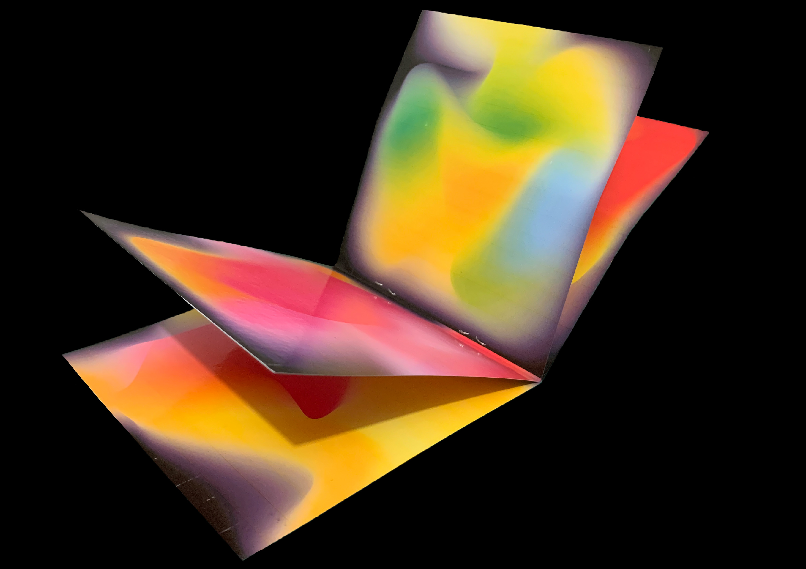
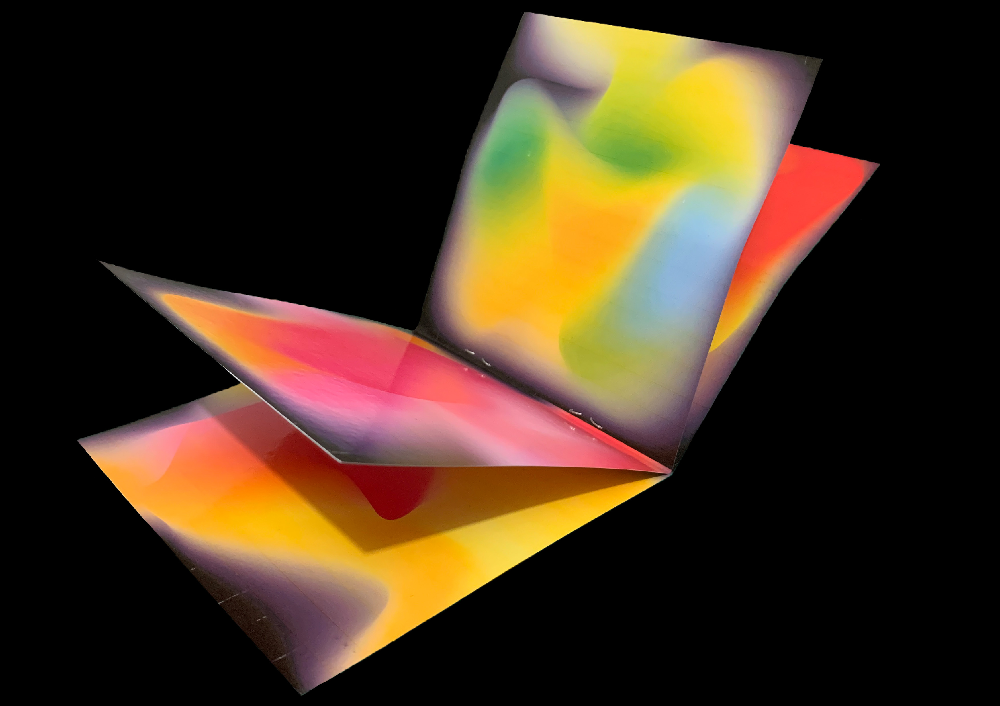

This project was on the question of ‘how does sound helps to visually depict our emotions?’ And to show this, I created a CD picture booklet which represents my upbringing in music and where my love for music came from. The picture booklet has colour gradients that each define an emotion that we all have gotten when listing to music. There's a QR code on the booklet that takes you to the website where you would see a video that’s attracted to it which contains the movement and sound of the pictures in the booklet. (The website is no longer available!) This work overall shows what our emotions could look like and sounds that convey that emotional memory. For more, you can read all about my research by clicking on the last image.


 


2022